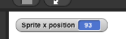

Sensor Blocks
At the bottom of Motion palette are three blocks
shaped differently from the others. These oval-shaped blocks are called reporters. Unlike the jigsaw-puzzle-piece-shaped
command blocks we've used until now, reporters don't carry
out an action (such as moving the sprite or displaying a speech
balloon) by themselves. Instead, they report a value,
usually for use in another block's input slot.
The and reporters tell you where the sprite
is on the stage. As in algebra, x means left-to-right
position, and y means bottom-to-top position.
-
Drag an x position block into the
scripting area and click on it. You should see a little speech
balloon next to the block:
- Now, click on the sprite itself, drag it somewhere
else and click on the x position block again.
-
Click on the gray box to the left of the x position block in
the palette, and then look over to the stage. You will see that the
value that the block would report is displayed on the stage:

This on-stage display is called a watcher.
You can also mark your stage with axes so that you can see the approximate coordinates of the sprite. UNFINISHED TEXT AND PICTURE SHOWING HOW
- Create a watcher for y position and also for direction. Move the sprite around, using commands or just by dragging, and see how the values reported by these blocks change.